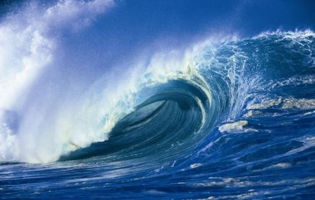

Denna flik handlar om mig, Macie:
Intressen: Dans, Piano, Musik, Song och Rita
Sporter: Golf, Skidor, Simmning och min favorit SURFING!
Färger: Blå och Rosa
Djur: Alla djur men mest hundar
Sötsaker: Chocklad, Sockervadd, klubbor
Vänner: Jaynell Wong, Miranda Lundin, Elsa Wiksten, Sanna Hansson, Tatia Darsalia, Naima Lohman, Elsa Forzelius, Greta Olsson och Amanda Edblad
Frukter: Vattenmelon, Äpple och Appelsin
Bär: Jordgubbar, hallon, smultrån
Musik stilar: allt från 60-90 talets musik och Rock! och lite pop
